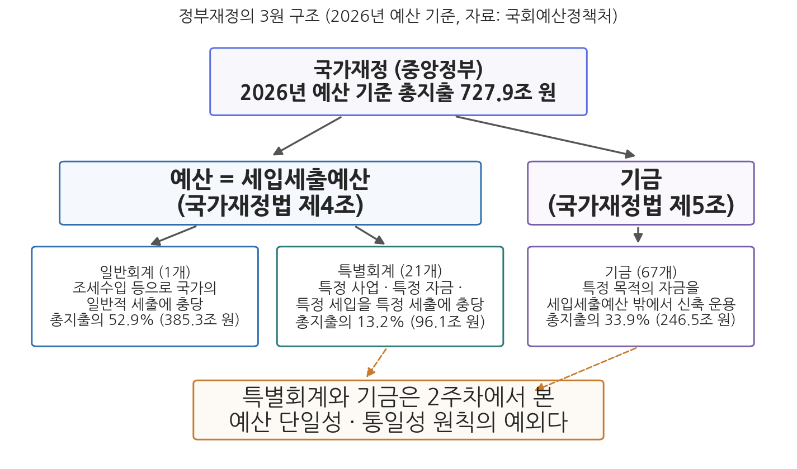
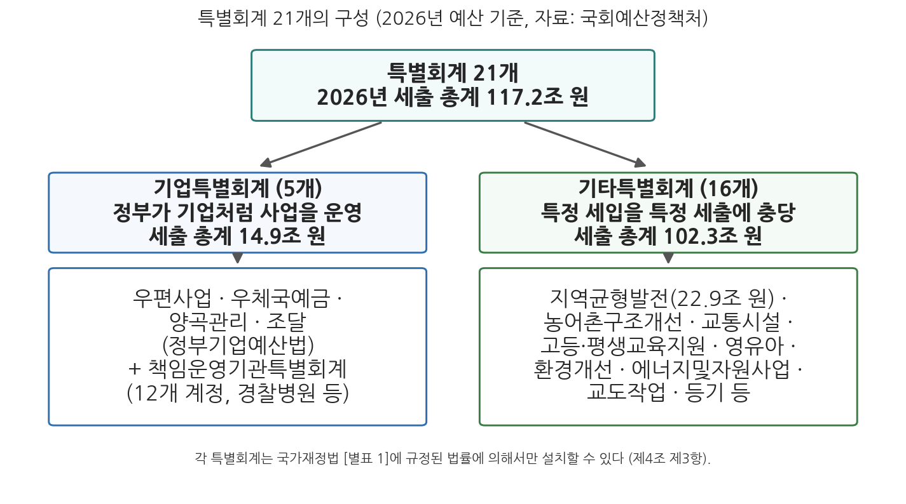

3주차 1차시. 정부재정의 기본구조: 일반회계와 특별회계
최종 수정: 2026-08-13 · 이 교재는 학기 중에도 계속 업데이트됩니다
국가의 회계는 일반회계와 특별회계로 구분한다. (국가재정법 제4조 제1항)
이 장에서 배우는 것
2025년 12월 2일, 국회는 2026년도 예산을 총지출 727.9조 원으로 확정했다. 뉴스는 이 숫자를 마치 하나의 지갑처럼 전한다. 그러나 실제의 나라 살림은 하나의 지갑이 아니다. 2026년 중앙정부의 재정은 일반회계 1개, 특별회계 21개, 기금 67개, 모두 89개의 주머니로 나뉘어 운영되고 있다(국회예산정책처, 2025). 월급을 생활비 통장 하나로 관리하지 않고 적금 통장, 비상금 통장, 자동이체 통장으로 쪼개 두는 가계와 비슷한 모습이다. 쪼개 두면 각 주머니의 용도와 수지가 분명해지는 대신, 내 재산이 전부 얼마인지 한눈에 보기는 어려워진다. 국가재정도 정확히 같은 딜레마를 안고 있다.
여기서 2주차 2차시의 기억을 소환할 필요가 있다. 우리는 전통적 예산원칙 가운데 단일성의 원칙(예산은 가능한 한 하나로)과 통일성의 원칙(모든 수입은 국고로 모으고, 특정 수입을 특정 지출에 묶지 말 것)을 배웠다. 그런데 방금 본 현실은 원칙과 정반대로 보인다. 하나이기는커녕 89개이고, 특별회계와 기금은 아예 특정 수입과 특정 지출을 묶는 것을 존재 이유로 삼는다. 원칙이 틀린 것인가, 현실이 일탈한 것인가. 답은 둘 다 아니다. 특별회계와 기금은 원칙을 알면서도 법률로 허용한 예외이며, 예외에는 나름의 논리와 대가가 있다. 이번 차시는 그 예외의 논리를 일반회계·특별회계를 중심으로 뜯어보고, 다음 차시(3주차 2차시)에서 기금을 다룬다. 구체적으로 다음을 배운다.
- 정부재정의 3원 구조(일반회계·특별회계·기금)와 2026년 기준 각 부분의 개수·규모
- 일반회계의 성격: 조세수입으로 국가의 일반적 세출에 충당하는 재정의 중심 회계
- 특별회계의 의의와 국가재정법 제4조의 설치요건, 별표 1 열거주의와 신설 심사 장치
- 특별회계의 현황(2026년 21개)과 칸막이 재정·통폐합을 둘러싼 쟁점
이 장은 하나의 질문을 따라 전개된다. "나라 살림은 왜 하나의 회계로 운영되지 않으며, 쪼개진 구조는 무엇을 얻고 무엇을 잃는가?"
1.1 일반회계·특별회계·기금의 3원 구조를 지도로 그린다 → 1.2 재정의 중심인 일반회계의 성격을 확인한다 → 1.3 특별회계의 설치요건(국가재정법 제4조)과 신설 통제 장치를 조문으로 읽는다 → 1.4 2026년 특별회계의 현황을 살피고 칸막이 재정·통폐합 쟁점을 따져 본다.
1.1 정부재정의 기본구조: 89개의 주머니
정부재정은 크게 예산과 기금으로 이루어진다. 예산은 세입세출예산에 편성되어 운영되는 부분으로, 다시 일반회계와 특별회계로 구분된다(국가재정법 제4조 제1항). 기금은 세입세출예산 밖에서 운용할 수 있도록 허용된 부분이다(제5조 제2항). 그래서 정부재정의 기본구조는 흔히 일반회계·특별회계·기금의 3원 구조로 요약된다. 그림 3-1이 이 구조를 한눈에 보여 준다.

그림 3-1을 읽는 법은 이렇다. 맨 위가 중앙정부 재정 전체이고, 한 단계 아래에서 세입세출예산에 담기는 예산(왼쪽)과 그 밖에서 운용되는 기금(오른쪽)으로 갈라지며, 예산은 다시 일반회계와 특별회계로 나뉜다. 각 상자의 아래에는 2026년 예산 기준 개수와 총지출에서 차지하는 비중이 있다. 이 그림에서 알 수 있는 것은 두 가지다. 첫째, 국가재정의 구분은 "돈의 용도"가 아니라 "돈을 담는 그릇의 형식"에 따른 구분이다. 같은 복지 지출이라도 일반회계에 담길 수도, 특별회계에 담길 수도, 기금으로 운용될 수도 있다. 둘째, 규모의 감각이다. 2026년 예산 기준 총지출 727.9조 원 가운데 일반회계는 52.9%(385.3조 원)에 그치고, 특별회계 13.2%(96.1조 원)와 기금 33.9%(246.5조 원)를 합친 47.1%가 일반회계 바깥의 그릇에 담겨 있다(국회예산정책처, 2025). 나라 살림의 절반 가까이는 "일반적인" 재정이 아니라 "특정한" 목적의 재정인 셈이다.
일반회계(general account)는 조세수입 등을 주요 세입으로 하여 국가의 일반적인 세출에 충당하기 위하여 설치하는 회계다(국가재정법 제4조 제2항). 특별회계(special account)는 특정한 사업의 운영, 특정한 자금의 보유·운용, 또는 특정한 세입을 특정한 세출에 충당하기 위하여 일반회계와 구분하여 회계처리할 필요가 있을 때 법률로 설치하는 회계다(제4조 제3항). 기금(fund)은 특정한 목적을 위하여 특정한 자금을 신축적으로 운용할 필요가 있을 때 법률로 설치하며, 세입세출예산에 의하지 아니하고 운용할 수 있다(제5조). 일반회계와 특별회계를 합쳐 "예산"이라 부르고, 여기에 기금까지 합친 것이 정부재정의 전모다.
이 구조는 2주차 2차시에서 배운 예산원칙의 거울이기도 하다. 예산 단일성의 원칙은 정부의 모든 재정활동을 가능한 한 하나의 예산에 담아야 국민과 국회가 재정 전체를 쉽게 파악할 수 있다는 요청이고, 통일성의 원칙은 모든 수입을 일단 국고에 모은 뒤 지출 우선순위를 겨루게 해야 한다는 요청이다. 특별회계는 두 원칙 모두의 예외다. 별도의 회계를 만든다는 점에서 단일성의 예외이고, 특정 세입을 특정 세출에 묶는다는 점에서 통일성의 예외다. 기금은 여기서 한 걸음 더 나아가 세입세출예산이라는 틀 자체의 바깥에 선다. 요컨대 3원 구조는 원칙과 예외의 구조이며, 예외를 어디까지 허용할 것인가가 이 장과 다음 차시를 관통하는 쟁점이다.
한 가지 실무 지형도 정리해 두자. 1주차 1차시에서 본 2026년 재정당국 재편에 따라, 예산과 기금의 편성·운용, 그리고 뒤에서 볼 특별회계·기금의 신설 타당성 심사는 국무총리 소속 기획예산처가 관장한다. 반면 국고금의 관리는 국고금관리법에 따라 재정경제부 소관이다. 89개의 주머니로 쪼개 계리하더라도 실제 현금은 국고라는 하나의 금고를 통해 드나들며, 그 금고지기와 살림 설계자가 2026년부터 서로 다른 부처가 된 것이다.
덧붙이면 3원 구조는 중앙정부만의 것이 아니다. 지방자치단체의 살림도 일반회계·특별회계·기금으로 짜여 있으며, 그 수는 중앙정부보다 훨씬 많다. 2023회계연도 기준으로 지방정부에는 일반회계 243개, 특별회계 1,975개, 기금 2,814개가 있다(국회예산정책처, 2025). 243개의 광역·기초 자치단체가 각자 하나의 일반회계와 여러 개의 특별회계·기금을 두고 있기 때문이다. 2주차 1차시에서 본 중앙정부와 지방정부의 재정기능 배분은 이런 회계 구조 위에서 움직인다. 이 장의 이하 서술은 별도의 언급이 없는 한 중앙정부 재정을 다룬다.
2026년 일반회계의 세출 총계는 507.6조 원인데, 위에서는 일반회계 지출을 385.3조 원이라고 썼다. 둘 다 맞다. 앞의 것은 회계 안의 모든 지출을 그대로 더한 총계 기준이고, 뒤의 것은 회계·기금 사이의 내부거래(전출입)와 보전거래를 걷어낸 총지출 기준이다(국회예산정책처, 2025). 일반회계가 특별회계에 돈을 넘겨주면 두 회계에 같은 돈이 두 번 잡히므로, 재정 전체의 크기를 말할 때는 이를 빼고 세야 한다. 재정 기사나 보고서를 읽을 때는 항상 어느 기준의 숫자인지부터 확인해야 한다. 총계·순계·총지출의 셈법은 4주차 1차시에서 본격적으로 다룬다.
1.2 일반회계의 성격
일반회계는 국가 고유의 일반적 재정활동을 담는 그릇이자 재정의 중심 회계다. 국가재정법 제4조 제2항이 밝히듯 일반회계의 재원은 조세수입 "등"이다. 소득세·법인세·부가가치세를 비롯한 국세수입이 주를 이루고, 정부출자기업의 배당수입이나 지분 매각 수입 같은 세외수입이 더해진다(국회예산정책처, 2025). 지출 쪽은 "국가의 일반적인 세출"이다. 국방·외교·치안처럼 국가라면 반드시 해야 하는 일부터 교육·복지·산업 지원까지, 특정 재원에 묶이지 않은 국가 활동 전반이 일반회계에서 나간다. 2026년 예산 기준으로 일반회계는 총지출의 52.9%인 385.3조 원이다.
일반회계의 성격을 이해하는 열쇠는 재원과 지출의 관계다. 조세는 국민에게 반대급부 없이 강제로 부과·징수된다. 내가 낸 세금이 어느 사업에 쓰이는지 지정할 수 없고, 국가가 나에게 세금만큼의 서비스를 돌려줄 의무를 지는 것도 아니다. 이렇게 꼬리표 없이 걷힌 돈은 일단 국고에 모이고, 그 다음에 어디에 쓸지를 놓고 모든 정책사업이 우선순위를 겨룬다. 앞서 본 통일성의 원칙이 온전하게 작동하는 공간이 바로 일반회계인 것이다. 1주차에서 우리는 예산의 본질이 정책사업이고 예산 배분이 가치판단의 문제라고 배웠다. 그 가치판단, 곧 "국방이냐 복지냐, 이 사업이냐 저 사업이냐"의 경쟁이 가장 순수한 형태로 벌어지는 무대가 일반회계라고 할 수 있다. 거꾸로 말하면 특별회계와 기금은 특정 재원에 미리 꼬리표를 달아 이 경쟁의 무대에서 일부 재원을 빼내는 장치다. 왜 그런 장치가 필요한지가 다음 절의 질문이다.
1.3 특별회계의 의의와 설치요건
특별회계는 특정한 목적을 위한 세입과 세출을 일반회계와 분리해 별도로 관리하는 제도다. 어떤 경우에 이런 분리가 허용되는지는 국가재정법 제4조가 정하고 있다. 이 과목에서 처음 조문 전체를 읽어 볼 만한 조문이므로, 원문 그대로 읽어 보자.
"① 국가의 회계는 일반회계와 특별회계로 구분한다.
② 일반회계는 조세수입 등을 주요 세입으로 하여 국가의 일반적인 세출에 충당하기 위하여 설치한다.
③ 특별회계는 국가에서 특정한 사업을 운영하고자 할 때, 특정한 자금을 보유하여 운용하고자 할 때, 특정한 세입으로 특정한 세출에 충당함으로써 일반회계와 구분하여 회계처리할 필요가 있을 때에 법률로써 설치하되, 별표 1에 규정된 법률에 의하지 아니하고는 이를 설치할 수 없다."
무슨 뜻인가. 제3항은 특별회계를 설치할 수 있는 사유를 세 가지로 한정한다. 첫째는 국가가 특정한 사업을 운영하고자 할 때다. 우편처럼 정부가 요금을 받고 서비스를 파는 기업형 사업이 여기에 해당한다. 둘째는 특정한 자금을 보유하여 운용하고자 할 때다. 셋째는 특정한 세입으로 특정한 세출에 충당할 필요가 있을 때, 곧 특정 수입원과 특정 지출 용도를 짝지어 관리할 필요가 있을 때다. 그리고 이 사유에 해당하더라도 반드시 법률로 설치해야 하며, 그 법률이 국가재정법 [별표 1]에 등재되어 있지 않으면 설치할 수 없다. 예를 들어 환경개선특별회계는 환경정책기본법에, 지역균형발전특별회계는 지방자치분권 및 지역균형발전에 관한 특별법에 근거를 두는데, 이 법률들이 모두 [별표 1]에 올라 있다. 새 특별회계를 만들려면 근거 법률을 만드는 것으로 끝나지 않고 국가재정법 개정으로 [별표 1]에 그 법률을 추가해야 하므로, 이중의 잠금장치가 걸려 있는 셈이다(국회예산정책처, 2025).
잠금장치는 하나 더 있다. 국가재정법 제14조에 따라, 특별회계나 기금을 신설하려는 중앙관서의 장은 해당 법률안을 입법예고하기 전에 신설 계획서를 기획예산처장관에게 제출하여 타당성 심사를 받아야 하고, 기획예산처장관은 자문회의의 자문을 거쳐 신설 기준에 적합한지를 심사한다. 부처가 "우리 사업은 특별하니 별도 회계를 달라"고 요구하는 일은 늘 있기 마련이므로, 중앙예산기관이 문지기 역할을 맡도록 한 것이다. 참고로 이 심사는 2026년 정부조직 개편 전에는 기획재정부장관의 소관이었다.
특별회계가 단일성·통일성 원칙의 예외로 허용되는 논리는 두 가지다. 첫째, 수지의 분리 파악이다. 모든 수입과 지출을 하나의 회계에 섞어 계리하면 특정 사업의 재정수지(수입에서 지출을 뺀 것)가 보이지 않는다. 우편사업을 일반회계에 섞어 두면 우표·택배 수입이 배달 비용을 감당하고 있는지, 적자를 세금으로 메우고 있는지 알 수 없다. 별도 회계로 분리하면 이 대응 관계가 드러나고, 요금 결정이나 사업 존폐 판단의 근거가 생긴다. 둘째, 운영의 자율성과 효율성이다. 기업형 사업에 일반 행정과 같은 경직된 예산 통제를 적용하면 수요 변화에 대응하기 어렵다. 실제로 기업특별회계는 정부기업예산법에 따라 회전자금 보유, 초과수입의 관련 비용 사용, 전용 특례 같은 신축성을 인정받는다. 다만 대가가 있다. 회계가 늘어날수록 재정 구조가 복잡해져 정부 전체의 세입·세출을 파악하기 어려워진다. 그래서 특별회계는 어디까지나 일반회계를 보완하는 역할에 머물러야 한다는 것이 제도의 설계 사상이다.
설치된 특별회계는 성격에 따라 두 유형으로 나뉜다. 기업특별회계는 정부가 기업처럼 사업을 운영하기 위한 것으로, 정부기업예산법에 따른 우편사업·우체국예금·양곡관리·조달의 4개 특별회계와, 책임운영기관의 설치·운영에 관한 법률에 따른 책임운영기관특별회계(경찰병원 등 12개 계정으로 구성)를 합쳐 5개다. 나머지는 특정한 세입을 특정한 세출에 충당하기 위한 기타특별회계로, 2026년 현재 16개가 설치되어 있다(국회예산정책처, 2025). 그림 3-2가 이 구성을 보여 준다.

그림 3-2를 읽는 법은 이렇다. 위의 상자가 2026년 특별회계 전체(21개, 세출 총계 117.2조 원)이고, 아래로 기업특별회계(왼쪽 5개)와 기타특별회계(오른쪽 16개)로 갈라지며, 각 상자 아래에 대표적인 특별회계의 이름이 있다. 이 그림에서 알 수 있는 것은 특별회계라는 하나의 이름 아래 성격이 꽤 다른 두 집단이 있다는 점이다. 기업특별회계는 "정부가 장사를 하는 회계"로 세출 총계가 14.9조 원에 그치는 반면, 기타특별회계는 "꼬리표 달린 재원의 회계"로 102.3조 원에 이르며 균형발전·교통·교육·환경 같은 굵직한 정책 분야의 재원 통로 역할을 한다. 조직 개편이 회계 구조를 바꾸기도 한다. 책임운영기관특별회계의 계정이던 특허청은 2025년 10월 정부조직 개편으로 지식재산처로 승격되면서 일반회계 기관으로 전환되었다(국회예산정책처, 2025). 회계의 형식이 기관의 법적 지위와 맞물려 있음을 보여 주는 대목이다.
1.4 특별회계의 현황과 쟁점
2026년 예산 기준 특별회계는 21개, 세출 총계는 117.2조 원이며, 내부거래를 걷어낸 총지출 기준으로는 96.1조 원으로 총지출의 13.2%를 차지한다(국회예산정책처, 2025). 비중의 흐름도 눈여겨볼 만하다. 총지출에서 특별회계가 차지하는 비중은 2017년 12.2%에서 2026년 13.2%로 오르내림을 거치며 완만히 높아졌고, 같은 기간 일반회계 비중은 55.5%에서 52.9%로 낮아졌다(국회예산정책처, 2025). 원칙상 보완적이어야 할 그릇들이 조금씩 몸집을 불려 온 것이다.
개수의 변동도 최근 몇 년 사이 활발하다. 2025년 12월 국가재정법 개정으로 유아교육지원특별회계를 확대·개편한 영유아특별회계가 2026년부터 설치되었고(유효기간 2030년까지 5년), 2023년 설치된 고등·평생교육지원특별회계는 일몰이 2030년까지 5년 연장되었다. 2026년 4월 개정에서는 반도체산업경쟁력강화특별회계의 신설 근거가 마련되었으며, 2026년 3월 제정된 필수의료 강화 지원 및 지역 간 의료격차 해소를 위한 특별법에 따라 지역필수의료 특별회계가 2027년 1월 1일 설치될 예정이다(국회예산정책처, 2025; 국가법령정보센터 국가재정법 제·개정이유). 교육, 반도체, 지역의료처럼 시대의 정책 우선순위가 특별회계라는 그릇의 신설로 이어지는 패턴이 뚜렷하다.
지역균형발전특별회계는 2005년 국가균형발전특별회계로 출발해 몇 차례 명칭과 계정 구조가 바뀌며 이어져 온, 기타특별회계 가운데 가장 큰 회계의 하나다. 부처별로 흩어진 지역 지원 사업의 재원을 한 회계에 모으기 위한 것으로, 기획예산처가 통합관리하고 세출은 각 소관 부처에 편성된다. 2026년 예산에서 이 회계는 22.9조 원으로 전년(14.7조 원) 대비 55.8% 늘었다. 이재명 정부가 균형성장 관련 재원을 이 회계로 대폭 모으고, 지방자치단체가 용도를 폭넓게 정할 수 있는 포괄보조 방식을 확대했기 때문이다. 국회예산정책처는 포괄보조 확대에 따른 사업 관리·성과 관리의 보완 과제를 지적했다. 한편 2026년 6월 국가재정법 개정은 "지역균형발전"이라는 용어를 "균형성장"으로 바꾸고 초광역특별협약과 초광역특별계정의 근거를 신설했다. (출처: 국회예산정책처, 『2026 대한민국 재정』, 2025; 국회예산정책처, 「지역균형발전특별회계 포괄보조 확대에 따른 향후 개선과제」, 2026)
이 사례가 보여 주는 것은 특별회계라는 형식의 양면성이다. 한편으로 특별회계는 정권의 정책 우선순위를 재정 구조에 새기는 유력한 수단이다. 일반회계 안의 개별 사업 예산은 해마다 우선순위 경쟁에 노출되지만, 특별회계로 묶인 재원은 상대적으로 안정적으로 유지되고, 한 해에 55.8%라는 큰 폭의 증액도 가능하다. 다른 한편으로 바로 그 안정성이 비판의 표적이 된다. 재원이 회계 단위로 칸막이가 쳐지면, 여건이 변해 다른 분야가 더 급해져도 재원을 옮기기 어렵기 때문이다.
이것이 이른바 칸막이 재정 논쟁이다. 특별회계에 대한 비판은 세 갈래로 정리할 수 있다. 첫째, 투명성의 문제다. 회계가 늘어날수록 재정 구조가 복잡해지고, 회계 간 전출입이 얽히면서 국민과 국회가 재정 전체를 파악하기 어려워진다. 둘째, 배분의 경직성이다. 특정 세입이 특정 세출에 법으로 묶이면, 그 분야의 지출 수요가 줄어도 재원이 계속 그 분야로 흘러 우선순위 재조정을 막는다. 셋째, 부처의 재원 확보 수단화다. 특별회계는 소관 부처에게 해마다 경쟁 없이 확보되는 안정적 재원을 뜻하므로, 정책 필요보다 조직의 이해 때문에 신설·존치 압력이 생긴다. 신설 요구는 많고 스스로 없어지는 회계는 드문 이유다.
배분 경직성의 고전적 예는 목적세와 특별회계의 결합이다. 휘발유·경유에 부과되는 교통·에너지·환경세는 목적세로서 그 수입이 교통시설특별회계의 주된 재원으로 연결된다. 도로·철도 투자가 시급하던 시기에는 대규모 기반시설 투자의 재원을 안정적으로 조달하는 장치로 기능했지만, 교통 기반시설이 상당히 갖추어진 뒤에도 세입이 법에 따라 계속 교통 부문으로 흘러 들어가 재원 배분을 경직시킨다는 비판이 꾸준히 제기되어 왔다. 특정 세입과 특정 세출의 연계는 도입 시점의 우선순위를 제도에 고정하는 장치이므로, 우선순위가 변한 뒤에는 그 고정이 족쇄가 될 수 있는 것이다.
그래서 국가재정법은 신설의 문턱(제14조 심사, 별표 1 열거주의)과 함께 출구도 마련해 두었다. 제15조는 특별회계가 설치 목적을 달성한 경우, 목적 달성이 불가능하다고 판단되는 경우, 특별회계와 기금 간 또는 상호 간에 유사하거나 중복되게 설치된 경우, 그 밖에 재정운용의 효율성과 투명성을 높이기 위하여 일반회계에서 통합 운용하는 것이 바람직하다고 판단되는 경우에는 특별회계를 폐지하거나 다른 특별회계·기금과 통합할 수 있다고 규정한다. 역대 정부가 재정 개혁 때마다 특별회계·기금 통폐합을 단골 과제로 올려 온 근거 조항이다. 다만 앞서 본 신설의 정치와 존치의 관성 탓에, 통폐합의 성적표는 신설의 속도를 따라가지 못해 왔다.
칸막이 논쟁의 밑바닥에는 더 근본적인 질문이 있다. 주머니가 89개로 쪼개져 있고 주머니끼리 돈을 주고받는다면, 도대체 나라 살림 전체의 크기와 수지는 얼마인가. 이 질문에 답하려면 회계·기금 간 내부거래를 걷어내고 재정 전체를 하나로 합산하는 별도의 틀이 필요하다. 그것이 4주차에서 배울 통합재정이다.
요약
정부재정은 예산(일반회계와 특별회계)과 기금의 3원 구조로 이루어지며, 2026년 예산 기준 중앙정부 재정은 일반회계 1개, 특별회계 21개, 기금 67개로 구성되어 총지출 727.9조 원 가운데 각각 52.9%, 13.2%, 33.9%를 차지한다. 특별회계와 기금은 2주차에서 배운 예산 단일성·통일성 원칙의 법정 예외다. 일반회계는 반대급부 없이 강제 징수되는 조세수입 등을 재원으로 국가의 일반적 세출에 충당하는 재정의 중심 회계로, 꼬리표 없는 재원을 놓고 모든 정책사업이 우선순위를 겨루는 공간이다. 특별회계는 특정 사업의 운영, 특정 자금의 보유·운용, 특정 세입의 특정 세출 충당이라는 세 사유에 한하여 법률로 설치되며(국가재정법 제4조 제3항), 별표 1 열거주의와 기획예산처장관의 신설 타당성 심사(제14조)라는 이중의 통제를 받는다. 분리 계리는 사업 수지를 드러내고 운영의 자율성을 높이지만 재정 구조를 복잡하게 만들므로, 특별회계는 보완적 역할에 머물러야 한다. 2026년 특별회계는 기업특별회계 5개와 기타특별회계 16개로 구성되고, 영유아·반도체·지역필수의료 등 신설이 이어지는 가운데 칸막이 재정(투명성 저하, 배분 경직성, 부처의 재원 확보 수단화) 비판과 제15조에 근거한 통폐합 논의가 계속되고 있다. 쪼개진 재정 전체를 하나로 합산해 보는 틀인 통합재정은 4주차에서 다룬다.
토론·복습 문제
3-1. (서술형 연습) 국가재정법 제4조 제3항이 정한 특별회계의 세 가지 설치 사유를 제시하고, 별표 1 열거주의와 제14조의 신설 타당성 심사가 각각 어떤 방식으로 특별회계의 무분별한 설치를 막는 장치인지 설명하시오. 이어서 이러한 통제에도 불구하고 특별회계 신설 압력이 계속되는 이유를 부처의 유인 구조로 서술하시오.
3-2. (조문 적용형) 어느 중앙관서가 특정 산업 지원을 위해 "OO산업육성특별회계"의 신설을 추진한다고 하자. 이 특별회계가 실제로 설치되기까지 필요한 법적 절차를 국가재정법 제4조 제3항과 제14조에 근거해 순서대로 서술하고, 반대 측이 국가재정법 제15조의 통폐합 기준을 들어 제기할 수 있는 반론을 두 가지 이상 구성하시오.
3-3. (해석형) 2026년 예산 기준 총지출에서 일반회계·특별회계·기금이 차지하는 비중은 각각 52.9%, 13.2%, 33.9%이고, 일반회계 비중은 2017년 55.5%에서 낮아져 왔다. 이 수치가 예산 단일성·통일성 원칙의 관점에서 무엇을 의미하는지 해석하고, "재정의 절반 가까이가 일반회계 밖에 있다"는 사실이 재정 운용의 투명성과 배분의 유연성에 각각 어떤 영향을 미칠지 논하시오.
3-4. (찬반 토론) 2026년 지역균형발전특별회계는 전년 대비 55.8% 증액된 22.9조 원으로 편성되었다. "국가적 우선순위 사업의 재원은 특별회계로 묶어 안정적으로 보장하는 것이 바람직하다"는 주장에 대해, 안정적 재원 보장의 이점과 칸막이 재정의 폐해를 논거로 찬성과 반대 입장을 각각 구성하고 자신의 입장을 정하시오.